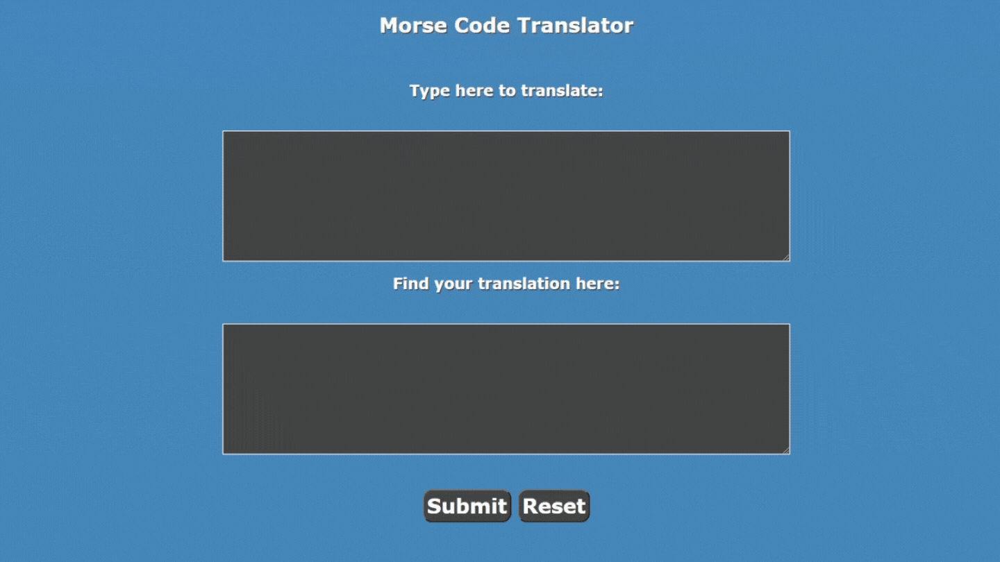
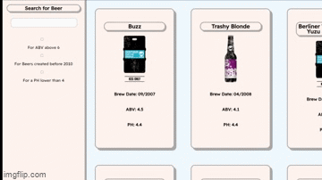

My name is Jonathan,
and I’m a Software Developer.
ABOUT ME
I’m a London-based Software Developer from Wales, with a passion for designing intuitive and beautiful projects.
As a graduate of _Nology, combined with a Master of Arts from the RWCMD, my creative and technological skills could be the perfect combination to create the innovative and effective software solutions you’re looking for.
SKILLS
PROJECTS

Take a trip through the land of Codeshire!
Link

Use this calculator to your advantage!
Link

Discover a coded language with Morse Code!
Discover a coded language with Morse Code!
Link

Find you favourite Beer from the API list!